Experiment 013
Live React + Vite · Shared Auth · n8n Scoring · Tailscale FunnelFrom Technical Test to Live Multi-User CV Screening Platform on One Shared Auth Backend.
Can a raw technical test CV screener evolve into a live multi-user platform on one shared auth backend, with in-browser text extraction, a transparent seven-step pipeline, and every single failure kept on record?
Same Tiel-Coder-35B model · React 18 + Vite 6 · 5 sample CVs · 2 Funnel doors · Online daily
Source Code
The screener is public. Read it yourself.
You get the full frontend. React plus Vite, 38 modules, upload queue, live pipeline view, plus in browser PDF extract. No secrets inside. Scoring runs on n8n, covered separately.
github.com/robbyaliasaakbar/robbyaliasaakbar.github.io/tree/main/cv_screening
System Requirements
Live App
/cv_screening/ on GitHub Pages
Screening API
Funnel :10000 (/webhook) to n8n :5678
Auth API
Funnel :443 to Docker :7002 (+ PUT /api/me)
Engine
n8n Technical Test (24 nodes, 50-20-30 rule)
Dataset
5 sample CVs (2780 to 7523 chars extracted)
Build Size
38 modules transformed, clean bundle
Local Dev
Vite dev server on :7008
Model Engine
Tiel-Coder-35B on llama.cpp
Built with the exact same local model as EXP 010, EXP 011, and EXP 012. The frontend is statically hosted on GitHub Pages. The screening engine operates inside dockerized n8n on my personal computer, reachable via an encrypted path-restricted Tailscale Funnel.
Screenshots
Side by Side Visual Proof: Light and Dark Themes
Every view in the CV screening platform supports daylight clarity and high-contrast dark mode. All 12 captures below were taken directly on mobile viewports to document the actual production interface.
1. Hero and Upload Queue
Light vs Dark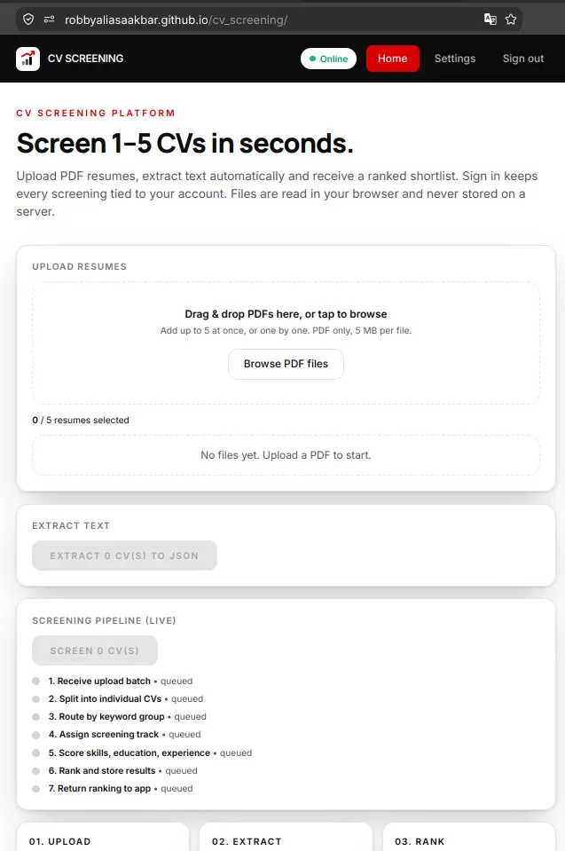
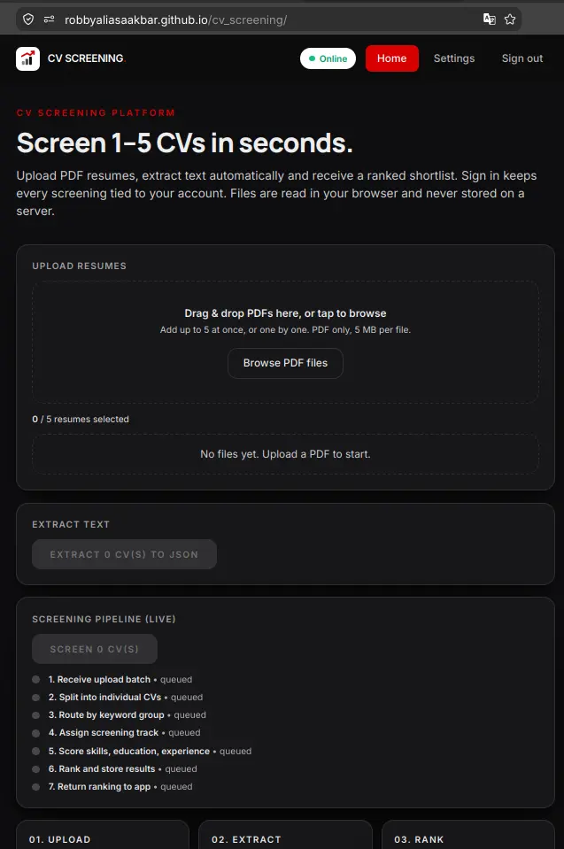
2. PDF Text Extraction to JSON
Light vs Dark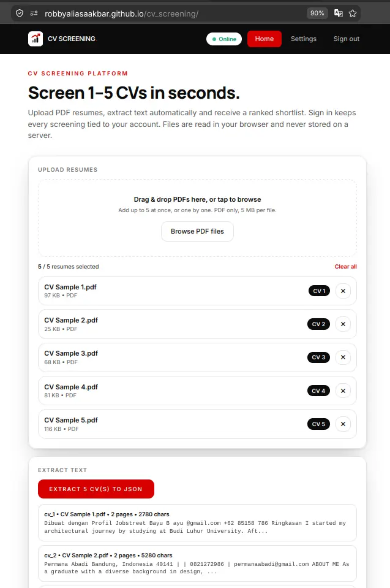
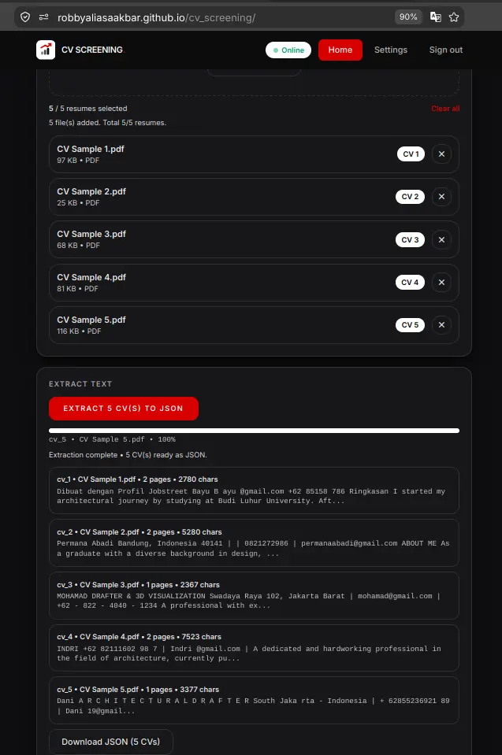
3. Live Visual Pipeline Progress
Light vs Dark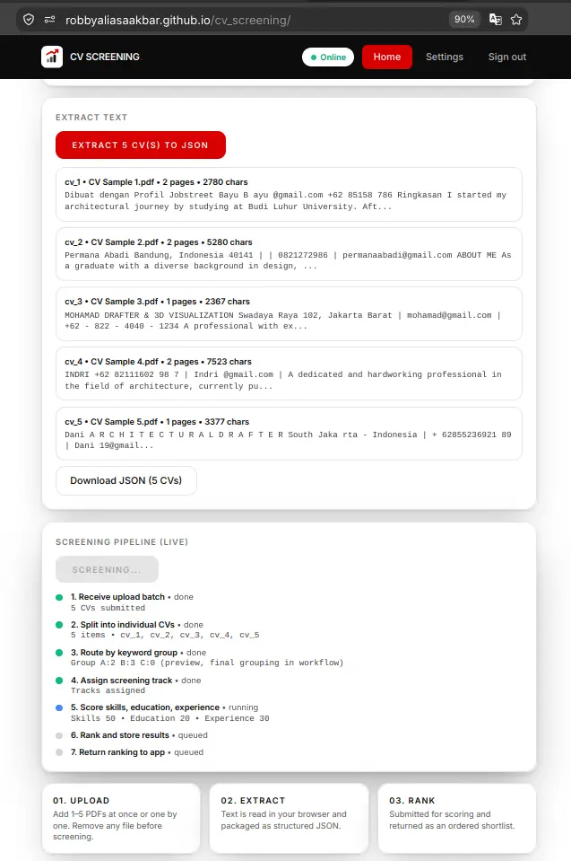
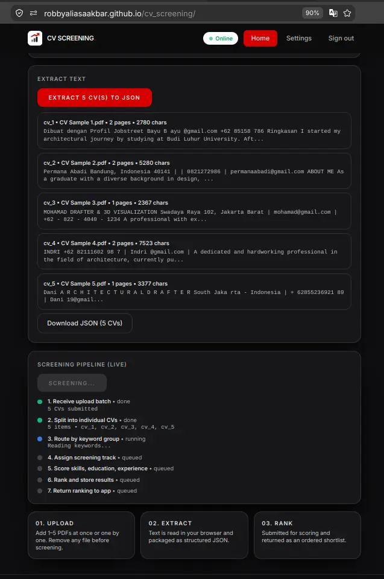
4. Shared Authentication Login
Light vs Dark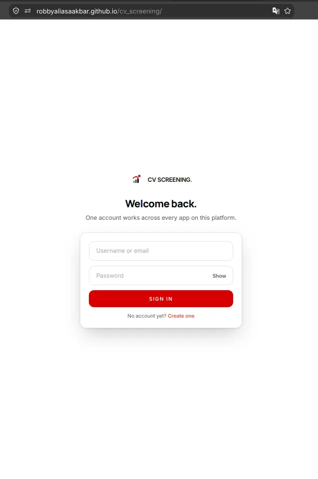
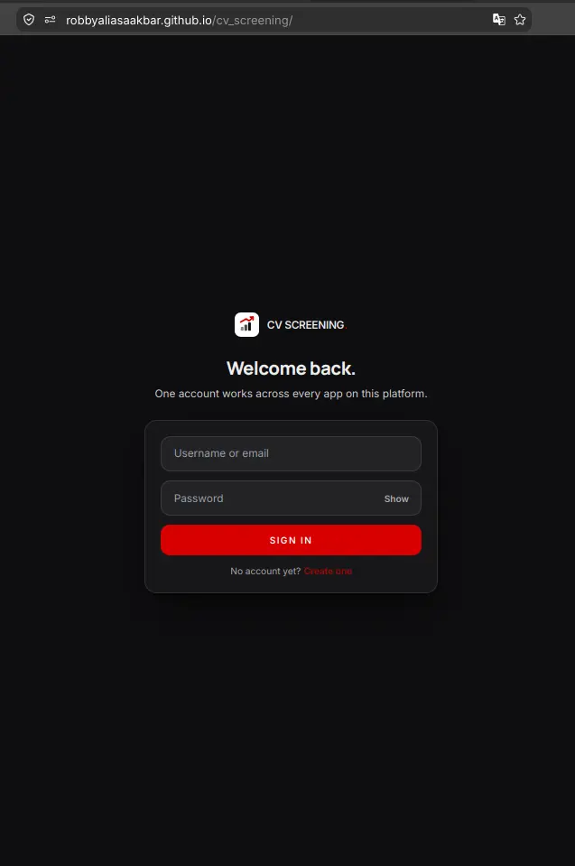
5. User Registration Flow
Light vs Dark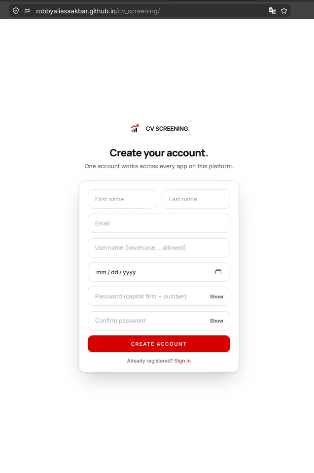
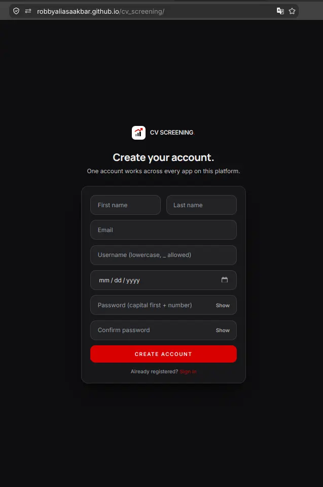
6. User Settings and Profile Preferences
Light vs Dark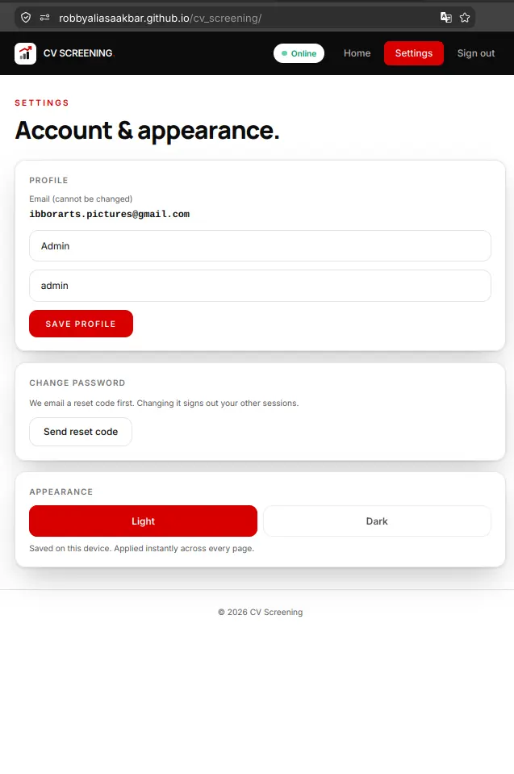
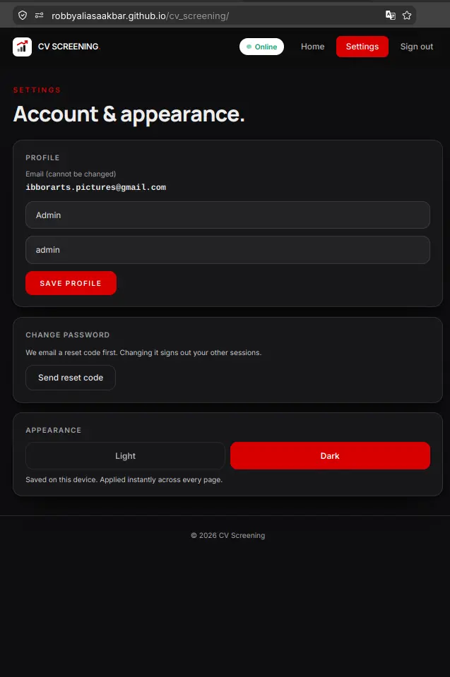
Live Demo
Try the Real Application Online
The frontend is deployed live on GitHub Pages. You can test the interface, upload sample CVs, watch the text extraction, and observe the live ranking in your browser.
Live frontend, home-PC backend + n8n. If the PC or funnel is off, login and screening fail with a message, which is expected and not broken. The screenshots above show the full operational flow. The screening webhook is intentionally open (spam ROI is near zero, and results wipe fresh by design), while the n8n editor is locked down behind path restriction.
For those of you unable to read this data from technical standpoint, here is the conclusion:
1. I got a hiring test once: a simple uploader with a smart back room. Instead of throwing it away, I rebuilt the front room properly.
2. One login now opens all three of my apps. The third one only added a small profile door. Nothing was rebuilt twice.
3. Your CVs get read inside your own browser, scored in seconds, and the score table gets wiped fresh after every run. Nothing piles up anywhere.
4. The page is public but the engines sleep in my home computer. When it is off, the page tells you honestly. The pictures above are the proof, so you do not have to take my word for it.
5. Everything that broke along the way is written on this same page. You are smart enough to see the full story, and that is exactly the point.
Experiment Details
Architectural Decisions and Engineering Tradeoffs
EXP 011 produced a single unified auth backend on port 7002, EXP 012 connected the second customer, and EXP 013 proves customer number three. The CV screening portal calls the exact same /api/login and /api/me endpoints. It isolates its token under a distinct key (cv.token) in local storage, yet the authentication lifecycle and verification logic remain completely identical.
Mandatory authentication serves as the platform gate. Stale tokens are detected immediately and redirected to the login view. We also introduced an additive upgrade to the backend by adding a profile endpoint at PUT /api/me. We made a safe snapshot first, confirmed 401 unauthenticated, 409 duplicate email, and 422 validation guards, and touched zero legacy files. This third app proves that a single well-architected backend can serve diverse client applications without endless rewrites.
Instead of uploading bulky binary PDF files to a remote server, the application parses documents entirely within the user browser using pdf.js. Our five sample resumes (spanning 2, 2, 1, 2, and 1 pages) yield clean text payloads between 2780 and 7523 characters. If one file in a batch is unreadable, defensive parsing keeps the remaining files intact rather than terminating the run.
The browser bundles extracted text into a structured JSON array and dispatches it to n8n over our public webhook. The workflow evaluates candidates across three concurrent evaluation tracks, calculates weighted scores (50% skills, 20% experience, 30% education), applies an explicit threshold of 65 points, and returns final rankings. The database executes a clean TRUNCATE statement after each execution, meaning results wipe fresh by design rather than accumulating lingering candidate data.
User interfaces should communicate real operational progress instead of spinning indeterminate loading wheels. The progress view mirrors the actual sequence of the twenty-four node n8n workflow across seven distinct visual steps. Step one dispatches the HTTP payload and step seven unpacks the response, while the middle steps reflect pipeline scoring tracks and keyword extractions.
For mobile devices, rankings render as vertical stacked cards rather than clipped horizontal tables. Following natural human reading flow, results are shown first and download actions are positioned below the final rankings. Users inspect their evaluated scores before deciding to export structured JSON or CSV data.
Internal development terminology has no place in customer-facing tools. We audited the entire codebase to eliminate prototype jargon like scaffold, museum, and portal, replacing them with clear professional language. Cards utilize floating elevation styles with crisp ink borders and clear contrast.
Button hover states feature bold red backgrounds with clean white text, providing distinct tactile feedback across both light and dark themes. We also removed awkward character accents so keywords remain easily searchable and effortless to type.
Connecting static web pages to local backend services requires disciplined network boundaries. Our Tailscale Funnel on port 10000 uses path restriction configured specifically for /webhook. Root requests to the server return a clean 404 response, keeping the n8n administrative editor hidden from the internet while the webhook receives incoming arrays reliably.
Security hardening scales with real threat severity. Because the screening endpoint is stateless, operates without stored history, and returns evaluations exclusively for submitted payloads, attacker return on investment is virtually zero. Leaving the webhook open is a documented architectural decision backed by threat modeling, avoiding unnecessary layers of enterprise complexity on a personal portfolio system.
Evidence Log
Standalone Evidence Log: Terminal Receipts and Verification
Every technical claim in this article is backed by verifiable command line outputs. Private authentication secrets, passwords, and personal identifiers have been replaced with dummy values, while raw status codes and payload structures remain intact.
E1. Funnel Path Restriction Receipt
404 Root / 200 WebhookChecking that the n8n administrative editor is completely unreachable from the public internet while the screening webhook answers incoming calls.
curl -s -o /dev/null -w "%{http_code}" https://aispec.tail06293c.ts.net:10000/
404
curl -s -X POST https://aispec.tail06293c.ts.net:10000/webhook/upload-cv -H "Content-Type: application/json" -d "[]"
HTTP: 200 OK (size: 0)
Result: Root path yields HTTP 404 protecting the editor, while the webhook endpoint responds faithfully with HTTP 200.
E2. End-to-End Pipeline Scoring Probe
200 OK Live RankingDispatching a test candidate payload through the public tunnel to verify full workflow execution across n8n scoring tracks.
POST /webhook/upload-cv
[{"id_cv":"cv_9","posisi":"Junior Architect","cv_text":"[SAMPLE RESUME TEXT]"}]
Response:
[
{
"id_cv": "cv_9",
"posisi": "Junior Architect",
"total_score": 40,
"status": "Tidak Lolos",
"rank": 1
}
]
Result: The scoring engine computes rule points, determines threshold outcome, and returns rank one without saving residual state.
E3. CORS Preflight Verification
Allowlist EnforcedVerifying that cross-origin preflight requests echo allowed origins while unauthorized domains are rejected.
curl -s -I -X OPTIONS https://aispec.tail06293c.ts.net/api/login \ -H "Origin: https://robbyaliasaakbar.github.io" \ -H "Access-Control-Request-Method: POST" -> HTTP/1.1 204 No Content -> Access-Control-Allow-Origin: https://robbyaliasaakbar.github.io curl -s -I -X OPTIONS https://aispec.tail06293c.ts.net/api/login \ -H "Origin: https://evil.example.com" -> HTTP/1.1 204 No Content -> (Access-Control-Allow-Origin header is omitted, browser blocks request)
Result: The GitHub Pages domain is explicitly permitted, while untrusted origins are safely denied access.
E4. Production Vite Compilation Receipt
38 Modules CompiledCompilation log showing public tunnel URLs baked into the static bundle during build time.
vite v6.2.0 building for production... transforming (38) src/App.jsx 38 modules transformed. dist/index.html 1.63 kB dist/assets/index-BTmkcJnm.js 158.20 kB Grep verification in shipped bundle: grep "https://aispec.tail06293c.ts.net:10000/webhook/upload-cv" dist/assets/*.js -> MATCH grep "https://aispec.tail06293c.ts.net" dist/assets/*.js -> MATCH grep "localhost" dist/assets/*.js -> 0 occurrences in api constants
Result: The production bundle contains zero local machine addresses, enabling remote visitors to connect directly to public tunnels.
E5. Database Cleanliness and Additive Upgrade
Integrity VerifiedAutomated end-to-end registration hygiene test with immediate purge of test credentials.
Test account registered -> Gmail OTP delivered -> verification successful -> session issued. Cleanup executed: users -1, sessions -2, otps -1 Active users remaining: 5 (admin and established accounts) Orphan records: 0 Database check: PRAGMA integrity_check -> ok Snapshot: auth.db.bak-20260915-profile
Result: Database integrity checks pass with zero orphaned sessions, and user records remain completely clean.
Failure Log
All 27 Failures Documented Honestly
Genuine engineering credibility is defined by how bugs are diagnosed and resolved. Here are all twenty-seven real issues encountered during development, divided into five major incident deep dives and twenty-two concise engineering takeaways.
1. Administrative Editor Exposed to the Internet
Security Perimeter Incident (#16, #18)Symptom: After enabling Tailscale Funnel on port 10000, testing the root path from outside returned HTTP 200 alongside the n8n administrative setup screen, exposing the workflow canvas to the public internet.
Diagnosis: Mounting the entire local port 5678 forwarded all paths indiscriminately. While the webhook endpoint answered properly, the administrative editor was completely unprotected.
Fix: We halted deployment immediately and reconfigured the tunnel using the path restriction argument set specifically to /webhook. Root requests now return HTTP 404, while the webhook endpoint responds reliably.
Lesson: Every public gateway must be validated from two sides: confirm that the desired endpoint responds, and verify that the administrative interface remains hidden.
2. False Diagnosis of Fragile Tunnel Infrastructure
Verification Fallacy (#25)Symptom: The assistant claimed the auth funnel was running in a foreground terminal that would drop upon window closure, and claimed reboot persistence was broken.
Diagnosis: Process inspection revealed the tunnel was running under a systemd user session with no controlling terminal. The assistant had queried system-level units rather than user units. Daemon-held configurations handle tunnel routing independently of CLI processes.
Fix: The erroneous claim was retracted, and the unnecessary backlog of proposed service scripts was discarded. The local backend setup operates as an intentional design decision.
Lesson: Inspect user-level systemd units before claiming services do not exist. Declaring failure modes without verification produces fictional problems.
3. Four-Node Security Guard Rejected by Owner Judgment
Architectural Overengineering (#22, #24, #27)Symptom: The assistant designed a complex four-node token authentication chain inside the live n8n canvas to protect the screening webhook, reporting changes were applied.
Diagnosis: Threat modeling proved the webhook endpoint is stateless, results wipe fresh on every run, and malicious callers only receive their own submitted data. Adding multi-node token validation solved an enterprise problem on a portfolio project while adding unnecessary complexity. Furthermore, the tool call had only modified an unpersisted draft.
Fix: The owner formally rejected the overengineered security chain. The webhook remains intentionally open with documented threat boundaries, and the live workflow canvas was kept pristine.
Lesson: Security measures must scale with actual threat severity. A good engineer locks doors to the size of the danger, and saying no is a legitimate engineering choice.
4. Fabricated No-Login Rule and Domain Encroachment
Specification Drift (#8, #23)Symptom: The assistant introduced a banner stating no login was required for screening, assuming the original proof of concept flow should continue automatically.
Diagnosis: Access boundaries represent strategic product decisions reserved for the system owner. The core goal of Experiment 013 was proving shared backend authentication across a third platform client, making mandatory login essential.
Fix: The interface and client guards were rewritten to require authentication before accessing the application, and the division between owner decisions and coding implementation was reaffirmed.
Lesson: Access controls must be confirmed directly with the owner rather than inherited blindly from early prototypes.
5. Hot Module Replacement Split State During Navigation Rename
Development Runtime Trap (#3, #4)Symptom: Renaming navigation keys caused the browser to display the settings screen whenever the home button was clicked, even though disk files appeared correct.
Diagnosis: Rapid sequential edits overwhelmed Vite hot module replacement. The development server served a hybrid module graph mixing new state keys with legacy event handlers.
Fix: The development process was terminated, the server was restarted cleanly, and a fresh browser tab was opened to clear cached bundles.
Lesson: Structural changes to application keys require a clean server restart and fresh browser sessions rather than relying on live hot reloading.
6. Identical Scaffold Mirroring (##0)
Preserved original proof of concept files intact via copy-never-move conventions so legacy technical tests remain untouched.
7. Zombie Vite Child Processes (##1)
Killing parent shell processes left child Vite instances running on the target port. Always verify socket tables before launching dev servers.
8. Internal Prototype Vocabulary in Interface (##2)
Draft notes like scaffold and museum leaked into user headings. We audited all strings to ensure clean customer-facing wording.
9. Unspoken Server Restart Instructions (##4)
Failing to inform the owner that structural edits required restarting dev servers caused confusion. Operational instructions must accompany edits.
10. Awkward Accent Characters Impaired Readability (##5)
Using accented characters made words difficult to type and search. Professional styling favors clean typography over decorative accents.
11. Inverted Hover States on Buttons (##6)
An ambiguous visual instruction led to styling button borders instead of backgrounds. Clarifying visual expectations early prevents repeated revisions.
12. Download Buttons Placed Above Results (##7)
Placing export buttons above the ranking table disrupted reading order. Placing actions below data lets users review results before exporting.
13. Premature Styling on Ambiguous Feedback (##9)
Restyling forms without clarifying what was basic resulted in wasted effort. Short feedback requires a clarifying question before writing code.
14. Searching Client HTML for React Elements (##10)
Attempting to grep compiled component strings from empty root HTML shells failed. SPA verification requires inspecting bundled JavaScript assets.
15. Identical String Replacement Failure (##11)
Submitting identical target and replacement strings caused file edit tool errors. Always inspect tool echoes to catch failed edits immediately.
16. Stale Browser Token Lookups (##12)
Residual tokens from earlier sessions mimicked unexpected logins. Testing authentication flows requires clearing browser storage between runs.
17. Missing Host Command Line Utilities (##13)
Assuming sqlite3 and php were installed locally produced command errors. Inspect available utilities beforehand and use reliable alternatives like python3.
18. End-to-End Test Suite Hygiene (##14)
Database writes during testing must include cleanup routines that remove test rows and confirm zero orphaned sessions remain.
19. Build Failure on Unread Tool Echoes (##15)
Skipping a failed export edit caused compiler errors during build. Always verify output from each edit step before triggering production builds.
20. Docker Host Network Conflated with Native (##17)
Mistaking dockerized host-network containers for native host processes led to incorrect reports. Check compose manifests rather than process lists.
21. Vanishing Postgres Table Explained by Design (##19)
Searching for candidate tables locally returned empty sets because the workflow executes TRUNCATE after scoring, keeping runs fresh by design.
22. Localhost Dist Blocked by CORS via Funnel (##21)
Querying the public tunnel domain from localhost triggered browser CORS blocks. Verifying production behavior requires testing from allowed origins.
23. Misleading Backend Error Notifications (##21)
The interface showed backend down alerts when requests were blocked by CORS headers. Error messages should distinguish network failures from access limits.
24. Applied Tool Echo Differed from Persisted Canvas (##22)
Tool output reported nodes added while the active workflow canvas remained unchanged. Verify state by reading remote resources rather than tool echoes.
25. Preserving Production Build Entry Templates (##20)
Building from a root HTML artifact instead of the source template produced an empty bundle. Treat templates as source and root HTML as generated output.
26. Mobile Smoke Test Verification (##26)
Conducting real device smoke tests across public connections verified that authentication, extraction, and ranking operate smoothly in the wild.
27. Assistant Solution Stacking Anti-Pattern (##27)
Adding unrequested tasks and layers forced the owner to unravel unnecessary complexity. Good assistants are measured by problems they avoid creating.
Frontend Code
In-Browser PDF Parsing and Webhook Dispatcher
The frontend coordinates PDF text extraction and dispatches structured JSON payloads to the scoring engine. Below are the key implementations.
In-Browser Text Extraction via pdf.js - src/pdf.js (essence)
export async function extractTextFromPdf(file) {
const arrayBuffer = await file.arrayBuffer();
const pdf = await window.pdfjsLib.getDocument({ data: arrayBuffer }).promise;
let fullText = '';
for (let i = 1; i <= pdf.numPages; i++) {
const page = await pdf.getPage(i);
const content = await page.getTextContent();
const strings = content.items.map(item => item.str);
fullText += strings.join(' ') + '\n';
}
return {
numPages: pdf.numPages,
charCount: fullText.length,
text: fullText.trim()
};
}
Dispatching Clean Payloads to n8n Webhook - src/n8n.js (essence)
const N8N_WEBHOOK_URL = import.meta.env.VITE_N8N_WEBHOOK_URL;
export async function sendCvBatchToScreening(cvPayloadList) {
const response = await fetch(N8N_WEBHOOK_URL, {
method: 'POST',
headers: { 'Content-Type': 'application/json' },
body: JSON.stringify(cvPayloadList)
});
if (!response.ok) {
throw new Error(`Screening request failed with status ${response.status}`);
}
return response.json();
}
Additive User Profile Update - src/auth.js (essence)
export async function apiUpdateProfile(payload) {
const token = localStorage.getItem('cv.token');
const response = await fetch(`${AUTH_URL}/api/me`, {
method: 'PUT',
headers: {
'Content-Type': 'application/json',
'Authorization': `Bearer ${token}`
},
body: JSON.stringify(payload)
});
return response.json();
}
Networking Architecture
Two-Door Network: Path-Restricted Webhook and Shared Auth
Connecting a static client application on GitHub Pages to local containers requires strict network controls. Tailscale Funnel creates public HTTPS endpoints without exposing internal tools.
Door 1: Shared Authentication Gateway
Public URL: https://aispec.tail06293c.ts.net
Internal Target: Docker container on port 7002 (PHP auth engine from EXP 011).
Handles account logins, registration with Gmail OTP verification, password updates, and profile edits across all three client applications.
Door 2: Path-Restricted Screening Webhook
Public URL: https://aispec.tail06293c.ts.net:10000/webhook/upload-cv
Internal Target: Docker container on port 5678 (n8n execution engine).
Path restricted via tunnel arguments. The root path returns HTTP 404 to hide the n8n administrative editor, while the webhook endpoint evaluates candidate batches.
Both public gateways terminate encrypted TLS connections at the machine boundary. Static web pages download into the visitor browser and communicate with both endpoints without requiring intermediate cloud servers.
FAQ
Frequently Asked Questions
Why does screening require login when the original test did not? ▼
The test proved the engine. The platform proves one account serves many apps. Login ties screenings to people, and the same backend serves all three apps with zero re-code.
Where do my CVs go? Is anything stored? ▼
Text is extracted in your browser, scored by the workflow, then the result table is wiped fresh every run by design. Downloads (JSON/CSV) are yours to keep. 5 sample CVs, 2780 to 7523 chars each, never leave your browser as files.
Why is the screening webhook open? Is that not a hole? ▼
Measured decision, documented on-page: stateless endpoint, self-wiping results, near-zero attacker ROI (a spammer only scores their own junk). The n8n editor itself answers 404 on the public door. Hardening scales with threat, not with fear.
Too good to be true? 27 failures says otherwise - which one hurt most? ▼
Exposing the n8n editor to the internet during go-live. Full stop, documented with curl receipts. Also: a workflow edit that never persisted while the tool said saved. Both are on this page with evidence.
Why does it fail when your PC is off? ▼
No VPS by decision, home PC plus secure tunnels (:443 auth, :10000 screening). Off means doors closed and the page says so instead of pretending. Same honesty as EXP 010/011/012.
Why React for the portal but rule-code instead of AI for scoring? ▼
React earns its place (upload queue, live pipeline view, auth, settings in one state tree). Scoring stays rule-based 50-20-30 so every point is explainable. AI is used where it helps, not where it impresses.
Live Status
Live Status - Live Frontend, Home-PC Backend + n8n
✅ What works now
- Live React application hosted on GitHub Pages
- In-browser PDF text extraction via pdf.js with defensive parsing
- Realtime seven-step visual pipeline reflecting actual n8n execution
- Candidate ranking and evaluation with CSV and JSON exports
- Shared authentication login reusing EXP 011 backend on port 7002
- Additive profile management via PUT /api/me and password reset flows
- Two Tailscale Funnel doors with verified path restriction on port 10000
🚧 What isn't production yet
- Not running on a 24/7 cloud server infrastructure
- Backend relies on personal computer remaining powered on
- Screening webhook remains intentionally open by threat assessment
- No historical candidate results stored due to self-wiping TRUNCATE design
- Production hardening and service scaling reserved for a future milestone
Frontend live 24/7 on GitHub Pages. Backend + n8n run on my personal PC (funnels :443 + :10000). Off -> login/screening fails with a message, expected. Screenshots + curl logs show how it works.
Disclaimer
Disclaimer - Live Frontend, Local Backend + n8n, Not Production-Hardened
Validated with the exact same Tiel-Coder-35B model through llama.cpp-server (inference flags in EXP 001). Replica CVs, no real applicant data. OTP/token/passwords never shown.
POC: EXP 007 (the raw POC) · First UI: EXP 010 (Job Tracker) · Shared backend: EXP 011 (:7002) · Second customer: EXP 012 (/miniLeads/) · This: EXP 013 (/cv_screening/) · Machine: EXP 001